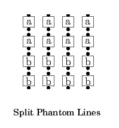
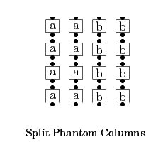
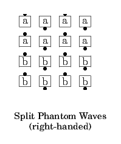
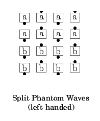
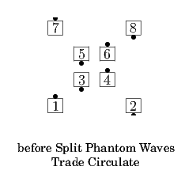
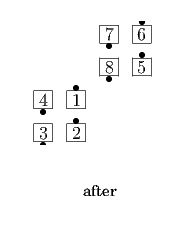
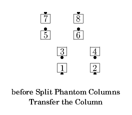
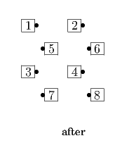

From a 4x4 Matrix, visualized as 4 adjacent Columns/Lines/Waves: Split the 4x4 Matrix into two pairs of adjacent Columns/Lines/Waves and work in the resulting 2x4 Matrix on each side.
 
Note that Split Phantom Lines only means that the dancers should consider themselves to be in General Lines; it does not imply any particular type of lines (e.g., two-faced, waves). Similarly, Split Phantom Columns only means that the dancers should consider themselves to be in General Columns.
Split Phantom Waves indicates the same groups of eight spots as Split Phantom Lines, but with the additional implication that the dancers in each line are facing in alternating directions. In that case, the facing direction of every phantom can be assumed from the facing direction of the real dancers.






© Copyright 2004-2017 Vic Ceder and CALLERLAB Inc., The International Association of Square Dance Callers. Permission to reprint, republish, and create derivative works without royalty is hereby granted, provided this notice appears. Publication on the Internet of derivative works without royalty is hereby granted provided this notice appears. Permission to quote parts or all of this document without royalty is hereby granted, provided this notice is included. Information contained herein shall not be changed nor revised in any derivation or publication.